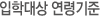
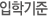
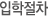
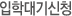

<table width="100%" border="0" cellpadding="0" cellspacing="0">
	<tr>
		<td align="center">
			<!---본문내용--->
			<table width="100%" border="0" cellspacing="0" cellpadding="0">
				<tr>
					<td class="tit_lv1"></td>
				</tr>
				<tr>
					<td>
						<table width="100%" border="0" cellpadding="0" cellspacing="0" class="tbody01">
							<tr>
								<td width="30%" align="center" class="cell07_r">2021년 현 기준</td>
								<td width="30%" align="center" class="cell07_r">생년월일</td>
								<td align="center" class="cell08">2022년 기준</td>
							</tr>
							<tr>
								<td align="center" class="cell04_r">만 0세</td>
								<td align="center" class="cell04_r">2020.01.01. ~ 2020.08.31</td>
								<td align="center" class="cell03">만 0세 2021.01.01. ~ 2021.08.31.</td>
							</tr>
							<tr>
								<td align="center" class="cell04_r">만 1세</td>
								<td align="center" class="cell04_r">2019.01.01. ~ 2019.12.31</td>
								<td align="center" class="cell03">만 1세 학급 2020년생</td>
							</tr>
							<tr>
								<td align="center" class="cell04_r">만 2세</td>
								<td align="center" class="cell04_r">2018.01.01. ~ 2018.12.31</td>
								<td align="center" class="cell03">만 2세 학급 2019년생</td>
							</tr>
							<tr>
								<td align="center" class="cell04_r">만 3세</td>
								<td align="center" class="cell04_r">2017.01.01. ~ 2017.12.31</td>
								<td align="center" class="cell03">만 3세 학급 2018년생</td>
							</tr>
							<tr>
								<td align="center" class="cell04_r">만 4세</td>
								<td align="center" class="cell04_r">2016.01.01. ~ 2016.12.31</td>
								<td align="center" class="cell03">만 4세 학급 2017년생</td>
							</tr>
							<tr>
								<td align="center" class="cell04_r">만 5세</td>
								<td align="center" class="cell04_r">2015.01.01. ~ 2015.12.31</td>
								<td align="center" class="cell03">만 5세 학급 2016년생</td>
							</tr>						
						</table>
					</td>
				</tr>
				<tr>
					<td height="40">&nbsp;</td>
				</tr>
				<tr>
					<td class="tit_lv1"></td>
				</tr>
				<tr>
					<td class="pdl20 pdb20">국회 소속 공무원 및 국회 업무와 관련 있는 직원의 생후 6개월(3월 1일 기준)~취학 전 자녀</td>
				</tr>
				<tr>
					<td class="tit_lv4 center">[국회어린이집 운영규정 제4장 원아관리]</td>
				</tr>
               <tr>
			<td>
			<strong>제20조(입소대상 및 우선순위)</strong><br>
			① 국회어린이집 입학 대상은 국회 소속 공무원 및 국회 업무와 관련 있는 자의 취학 전 아동으로 하며, 입학 순위는 다음 각 호의 순서에 따른다(일부개정.2017.06.16.) (일부개정.2018.01.29.) (일부개정.2020.08.13.).<br>
				1. 국회 소속 공무원 및 국회 내 무기계약근로자의 아동<br>
				2. 직영 후생시설 종사자의 아동<br>
				3. 국회의원실 인턴(입법보조원제외), 국회 내 기간제 근로자, 국회 내 상주 정당관계자 및 상시출입 6개월 이상 된 기자의 아동, 국회 내 상주 출연기관 종사자의 아동(일부개정.2020.08.13.)<br>
				4. 국회 내 상주업체 종사자의 아동<br>
				5. 국회의 보조금을 지원받는 법인, 단체 종사자의 아동<br><br>

			② 제1항의 같은 순위자 사이의 우선순위는 각 호의 순서에 따른다.<br>
				1.「국민기초생활보장법」에 따른 수급자의 자녀<br>
				2.「한부모가족지원법」제5조의 규정에 의한 보호대상자의 자녀<br>
				3.「국민기초생활보장법」제24조의 규정에 의한 차상위 계층의 자녀<br>
				4.「장애인복지법」제2조의 따른 장애인 중 장애의 정도가 심한 장애인의 자녀 또는 형제자매(일부개정.2017.02.06.) <br>
				(일부개정.2020.08.13.)<br>
				5. 국가유공자 등 예우 및 지원에 관한 법률 제4조제1항에 따른 국가유공자 중 전몰자(제3호), 순직자(제5호 제14호 제16호), 상이자(제4호 제6호 제12호 제15호 제17호)로서 보건복지부령으로 정하는 자의 자녀(일부개정.2020.08.13.)<br>
				6.「다문화가족지원법」제2조제1호에 따른 다문화가족의 자녀<br>
				7. 한부모가족 자녀 중 제2호를 제외한 가족의 자녀 및 조부모 가족의 자녀<br>
				8. 맞벌이<br>
				9. 자녀가 3명 이상인 가구의 영유아 또는 영유아인 자녀가 2명 이상인 가구의 영유아(일부개정.2017.06.16.)<br>
				10. 제1형 당뇨를 가진 경우로서 의학적 조치가 용이하고 일상 생활이 가능하여 보육에 지장이 없는 영유아<br>
				(일부개정.2020.08.13.)<br>
				11. 저소득층 보육료 지원 대상 영유아 중 기타 저소득층(3,4층)의 영유아(일부개정.2017.06.16.) (일부개정.2020.08.13.)<br>
				12. 입양된 영유아(일부개정.2017.06.16.) (일부개정.2020.08.13.)<br>
				13. 국회어린이집 재원 아동의 형제, 자매(일부개정.2020.08.13.)<br><br>


			<strong>제21조(입학대기자 관리) (일부개정.2018.04.19.)</strong><br>
		   ① 어린이집에 입학을 희망하는 아동은 대기자 등록을 할 수 있고, 대기 아동은 학기 중 결원이 발생하였거나 새 학년도 모집 시 대기 순번 중 우선순위를 반영하여 자동 정렬된 순서대로 입학 기회를 부여받는다(일부개정.2017.06.16.).<br>
			1. 만 0세 미만 대기 아동은 입학년도를 기준으로 전년도 1월 1일～8월 31일 출생자에 한해 입학 대상이 됨(신설.2014.11.05.)(일부개정.2017.06.16.).<br>
			2. 만 0세 미만 대기 아동 중 등록신청일 기준, 주민등록이 되지 않은 경우는 부 또는 모의 이름으로 대기 아동명을 기재해야 함(신설.2017.02.06). <br>
			3. 만 0세 미만 대기 아동은 대기년도 9월 30일까지 아동의 실명과 실제 생년월일로 정보를 수정해야 함(신설.2014.11.05.).<br>
			② 입학 대기자 신청은 새 학년도 입학을 위한 정시 모집과 결원 발생 시 충원을 위한 수시 모집으로 구분한다. <br>
			   1. 새 학년도 입학을 위한 정시 모집은 매년 9월 첫 번째 토요일 오전 9시에 개시하며, 모집 기간은 30일로 한다.   <br>
			   2. 충원을 위한 수시 모집은 정시 모집 마감 다음날부터 다음 연도 8월20일까지로 한다.<br> 
			   3. 입학 신청자의 대기 순번은 한 학년도 내에서만 유지된다.<br>
			③ 새 학년도 입학 대상 확정을 위한 전형일은 사전에 확정하여 어린이집 홈페이지 및 국회 전자게시판을 통해 공지하여야 한다. <br>
			④ 수시 모집 신청자는 정시 모집 입학 대상 확정 후 잔여 대기자의 후순위에 정렬한다. <br>
			⑤ 제1항에 따른 대기자가 입학 기회를 포기한 경우 대기자 명단에서 삭제한다(개정.2014.11.05.)(일부개정.2017.06.16.). 단, 직무 훈련, 파견 등 인사상의 사유인 경우 본인이 희망 시 대기 순번이 유지된다.  <br>
			⑥ 결원이 발생하여 충원할 경우 결원 발생일 오후 6시 기준 입학 대기자를 대상으로 우선순위를 반영하여 자동 정렬된 순서대로 입학 기회를 부여한다(일부개정.2017.06.16.).<br>
			⑦ 부모의 신분 변동 발생 시 신분변동 일을 기준으로 대기 순번을 조정한다. <br><br>

			<strong>제22조(보육아동수의 제한)</strong><br>
			어린이집 보육아동 수는 관계법령에 따라 아동 1인당 법정 면적 확보 및 보육교사의 수를 감안하여 제한할 수 있다.<br><br>

			<strong>제23조(입학 절차)</strong><br>
			자녀를 입학시키고자 할 경우에는 별지 제2호 서식에 의한 입학원서 및 입학 관련 서류를 정해진 기한 내 제출하여야 한다. 어린이집은 제21조에 따라 입학 여부를 결정하여 입학원서 접수 후 15일 이내에 입학 확정 명단을 국회사무처에 제출하여야 한다(일부개정.2017.06.16.)(일부개정.2017.08.24.)(일부개정.2018.04.19.).<br><br>

			<strong>제24조(입학 및 승급) (개정.2018.04.19.) </strong><br>
			① 새 학년도 입학은 매년 3월 첫째 주에 한다. <br>
			② 학기 중 결원이 발생하여 충원할 경우 입학 확정 후 7일 이내 입학하여야 한다(일부개정.2018.10.05.). <br>
			③ 재원아동의 다음 학년으로의 승급은 보호자의 희망과 재직여부에 따라 이루어진다. 다만, 최종입학사정시점(매년 2월1일로 하되, 공휴일인 경우 그 다음 근무일로 한다.)을 기준으로 보호자가 재직신분이 아닌 경우는 해당 아동이
			승급할 학년에 결원이 발생하고 대기자가 없을 경우에 한하여 다음 학년으로 승급?수료할 수 있다(일부개정.2018.10.05.). <br><br>

			<strong>제25조(퇴소 및 재입학)(일부개정.2018.04.19.)</strong><br>
			① 보호자가 아동의 입학 및 재원을 위하여 고의적으로 허위 사항을 기재하거나 허위 서류를 제출한 사실이 확인된 경우 운영위원회의 의결을 거쳐 해당 아동을 퇴소시킬 수 있다(일부개정.2017.06.16.).<br>
			② 보호자가 퇴사할 경우 아동은 자동으로 퇴소한다. 다만, 보호자가 원하는 경우에는 아동의 해당 학년을 수료할 수 있다(일부개정.2018.10.05.). <br>
			③ 보호자가 아동을 퇴소시키고자 할 때에는 퇴소 예정 30일 전에 별지 제3호 서식에 의한 퇴소신청서를 제출하여야 하며, 퇴소한 아동은 퇴소일로부터 3개월이 경과하여야 재입학 자격이 주어진다(일부개정.2017.06.16.). 
			다만 퇴소 아동의 경우에도 결원이 발생하였으나 입학 대기자가 없어 추가모집 시에는 3개월이 경과되지 않았어도 입학 지원을 할 수 있다(개정.2014.11.05.)(일부개정.2017.06.16.).<br><br>

			<strong>제26조(보육시간 및 휴원)</strong><br>
			① 정규 보육시간은 평일 08:30～18:30까지로 한다(개정.2014.11.05.).<bR>
			② 통합 보육시간은 평일 조간 07:30～08:30, 야간 18:30～22:00(시간연장 19:30～22:00)까지로 한다(개정.2014.11.05.).<bR>
			③ 통합 보육시간은 운영위원회의 의결로 달리 정할 수 있다(개정.2014.11.05.).<bR>
			④ 법정 공휴일은 휴무하며, 근무일 중 부득이한 사정이 있는 경우 운영위원회의 의결과 국회사무처의 승인을 받아 휴원할 수 있다(일부개정.2018.04.19.)(일부개정.2018.04.19.).<br><br>

			<strong>제27조(아동의 건강관리 등)</strong><br>
			원장은「영유아보육법」및「영유아보육법 시행규칙」에 따라 아동의 건강관리, 영양관리, 안전관리 등을 실시하여야 하며, 그 결과를 정기 운영위원회에 보고하여야 한다(일부개정.2017.06.16.).<br><br>

			<strong>제28조(보육기록 등 비치)</strong><br>
			원장은 영유아 보육에 필요한 원아의 생활기록부, 출석부, 영유아 보육일지, 관찰일지 등을 기록 비치하여야 한다.(일부개정.2017.06.16.)<br><br>

			<strong>제29조(신학년 형제아 배정)(신설.2014.11.05.)</strong><br>
			 ① 각 어린이집 재원생 중 형제아가 각각 다른 어린이집에 배정되어 있을 경우, 부모의 신청에 의해서 각 어린이집의 입학 가능 인원 내에서 형제아의 어린이집에 재원 형제아를 우선 배정한다
			 (일부개정.2017.06.16.)(일부개정.2018.04.19.).(일부개정.2018.10.05.). <br>
			② 입학대상 아동의 형제아 중 재원생이 있을 경우, 부모의 신청에 의해서 형제아의 어린이집에 입학 대상 아동을 우선 배정한다(일부개정.2018.04.19.).<br>
			③ 각 어린이집의 형제아 배정 가능 인원이 제한되어 있을 경우, 형제아는 다음 항목에 따라 우선순위를 정하고, 동순위일 경우 다음 단계의 우선순위를 고려한다(일부개정.2017.06.16.).<br>
			  1. 이동 시점의 운영 규정에 따른 우선순위<br>
			  2. 이동하는 형제아의 대기 등록 당시 대기일시에 따른 우선순위<br>
			  3. 추첨<br>
			</td>
		</tr>
		<tr>
			<td height="40">&nbsp;</td>
		</tr>
                <tr>
					<td class="tit_lv4 center">[입소절차시행규칙_ 국회어린이집 운영규정 시행규칙]</td>
				</tr>
                <tr>
					<td class="tit_lv5 center">[시행 2014년 11월 05일]</td>
				</tr>
               <tr>
					<td>
					<strong>제1조(입학신청)(신설.2018.04.19.)</strong><br>
					새 학년도 정시 및 수시 모집 기간의 개시일과 마감일은 매년 초 어린이집 홈페이지 및 국회 전자게시판을 통해 공지한다. <br>
					① 정시 모집은 매년 9월 첫 번째 토요일 오전9시부터 30일 간 진행하며 새 학년도 입학 대상의 확정 후 잔여 대기자는 결원 발생 시 충원을 위한 대기자로 관리한다.  <br>
					② 수시 모집은 정시 모집 마감 다음날부터 다음 연도 8월20일까지 진행하며, 8월20일 이후 정시 모집 개시 전일까지는 시스템 점검을 위해 모집을 중지한다. <br>
					③ 정시 및 수시 모집 신청 대기자는 새 학년도 3월부터 다음 연도 2월 28일까지 대기 순번이 유지된다. <br><br>
					
					<strong>제2조(입학 대기)(신설.2018.04.19.)</strong><br>
				  ① 대기 순번은 운영규정 제20조에 따른 우선순위를 반영한 선착순으로 자동 정렬하여 반영한다. 단, 정시 모집 신청 대기자가 수시 모집 신청 대기자에 우선한다. <br>
					② 입학 사정 시점에 부모의 신분 변동으로 즉시 입학이 불가능할 시에는 다음 대기자에게 입학 기회가 승계된다. <br>
					  1. 부모는 운영규정 제20조에 따른 우선순위 적용의 영향을 주는 신분변동 발생 시 15일 내 입학신청 홈페이지 정보를 수정하여야 하고, 신분 변동으로 인한 우선순위 변동 시 신분 변동 시점으로 소급하여 대기 순번을 조정하여 자동 정렬. <br>
					  2. 부모는 신분 변동 발생 시 어린이집이 정한 방법에 의하여 증빙 서류를 제출하여야 함. <br>
					  3. 직무 훈련, 파견 등 인사상의 사유로 즉시 입학이 불가능할 경우 다음 대기자에게 입학 기회 승계. 단, 본인이 희망 시 기존 대기 순번은 유지.   <br>
					  4. 퇴직 시 기존 대기 순번은 삭제되고, 복직 시에는 신규 신청으로 대기 순번을 적용. <br><br>											

					<strong>제3조(입학절차)</strong><br>
					입학 전형 시, 승급 인원 및 연령별 선발 정원을 게시한다.<br><br>

					<strong>제4조(입학확정)(일부개정.2018.04.19.)</strong><br>
					입학 확정은 다음과 같은 절차에 따른다.<br>
					① 어린이집은 입학 대상 아동의 부모에게 유선으로 연락하여 입학 여부를 확인하고, 부모는 24시간 이내로 정해진 방법에 따라 입학 여부를 결정하여야 한다. 24시간 이내에 부모의 응답이 없을 경우 자동으로 다음 대기자에게 입학기회가 승계된다.  <br>
					② 신입학 확정은 1, 2, 3어린이집 통합하여 1차로 선발한다.<br>
					③ 1차 신입학 인원 확정 후, 1, 2, 3어린이집 기관 배정은 부모의 신청이 있을 시 재원 형제아를 우선 배정한 후 1, 2, 3의 순으로 기관 배정한다. 단, 해당 어린이집의 선발인원 수를 고려하여 대기 순위에 따라 우선 반영한다.<br>
					④ 대기자 간 형제아가 있는 경우, 부모의 신청이 있을 시 손윗 형제의 배정에 따라 가능하면 같은 기관으로 배정될 수 있도록 반영한다.<br><br>

					<strong>제5조(입학일)</strong><br>
					새 학년도 입학은 3월 1일 기준으로 입학하지만, 중간 충원 시에는 입학 확정 후 7일 이내로 입학하여야 한다. 단, 즉시 입학할 수 없는 상당한 사유가 인정될 경우 14일 이내 입학할 수 있다(일부개정.2018.04.19.). .<br><br>

					<strong>제6조(대기조치)</strong><br>
					입학 확정 후 해당 영유아에게 6개월 이상 격리 조치가 필요한 전염병(진단서 첨부) 발생 시 입학은 취소하되, 기존 대기 순위는 유지한다(일부개정.2017.06.16.).<br><br>

					<strong>제7조(입학관련서류제출)(일부개정.2018.04.19.)</strong><br>
					입학 시 관련 서류 제출 기일은 다음과 같이 정한다.<br>
					① 신입학 시, 입학원서 및 부모의 재직증명 등 우선순위를 증명하는 서류는 입학 확정일 이전 어린이집이 정한 기한 내에 제출하고, 그 외 서류는 신입학 학부모 오리엔테이션 당일까지 제출<br>
					② 중간 입학 시, 입학 확정 후 일주일 이내 제출<br>
					③ 정해진 기한 내 입학 관련 서류 미제출 시 입학 대상에서 제외한다.  <br><br>
					
					<strong>제8조(맞벌이인정)</strong><br>
					부모의 맞벌이는 보건복지부 보육사업안내 지침의 관련 서류를 제출한 경우에만 인정한다. 단, 국회 직원인 경우 재직증명서를 제출한다(신설.2017.06.16.).<br><br>
					</td>
				</tr>
				
				<tr>
					<td class="tit_lv1"></td>
				</tr>
				<tr>
					<td class="pdl15 pdb20">
						- 정규운영 08:30~18:30<br>
						- 시간연장운영 07:30~08:30, 18:30~22:00<br>
						- 휴원 : 토요일, 일요일, 국경일, 휴일
					</td>
				</tr>
				<tr>
					<td class="tit_lv1"></td>
				</tr>
				<tr>
					<td class="pdl15 pdb20">
						① 입학 대기 접수: 입학홈페이지 <a href="http://assemblykids.or.kr" target="_blank" style="color:blue;">http://assemblykids.or.kr</a> 를 통해 입학대기접수<br>
						② 대기 순번 확인: 대기자 명단으로 확인<br>
						③ 결원 발생 시 순번대로 입소 연락<br>
						④ 입학금 납부<br>
						⑤ 구비서류 제출: 개별 안내 
					</td>
				</tr>
				<tr>
					<td class="tit_lv1"></td>
				</tr>
				<tr>
					<td class="pdl15 pdb20">
						- 국회어린이집 입학홈페이지 <a href="http://assemblykids.or.kr" target="_blank" style="a:text-decoration:none;color:blue;">http://assemblykids.or.kr</a>
						  (국회 제1/2/3어린이집 통합신청)
					</td>
				</tr>
			</table>
			<!---본문내용(e)--->
		</td>
	</tr>
</table>